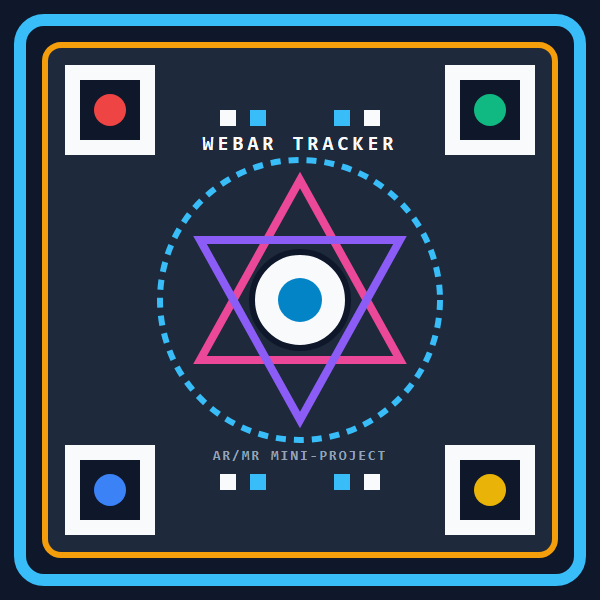

Aim camera directly at the AR target marker. Drag to rotate 3D relic.
Draco-compressed, real-time 3D asset optimization pipeline running directly inside the mobile browser.
Display this marker on another screen or print it on paper.
